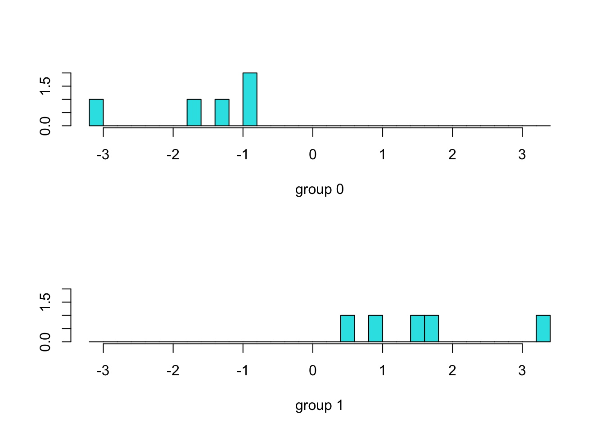
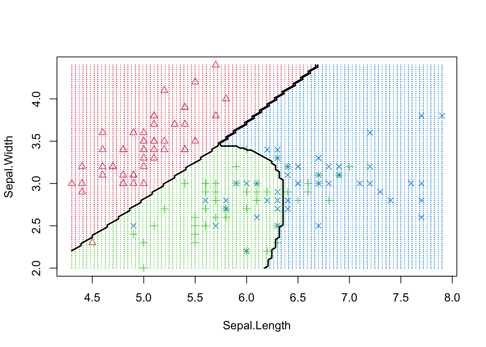
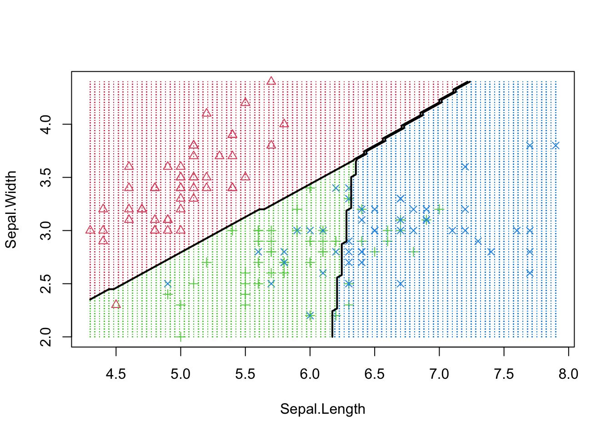
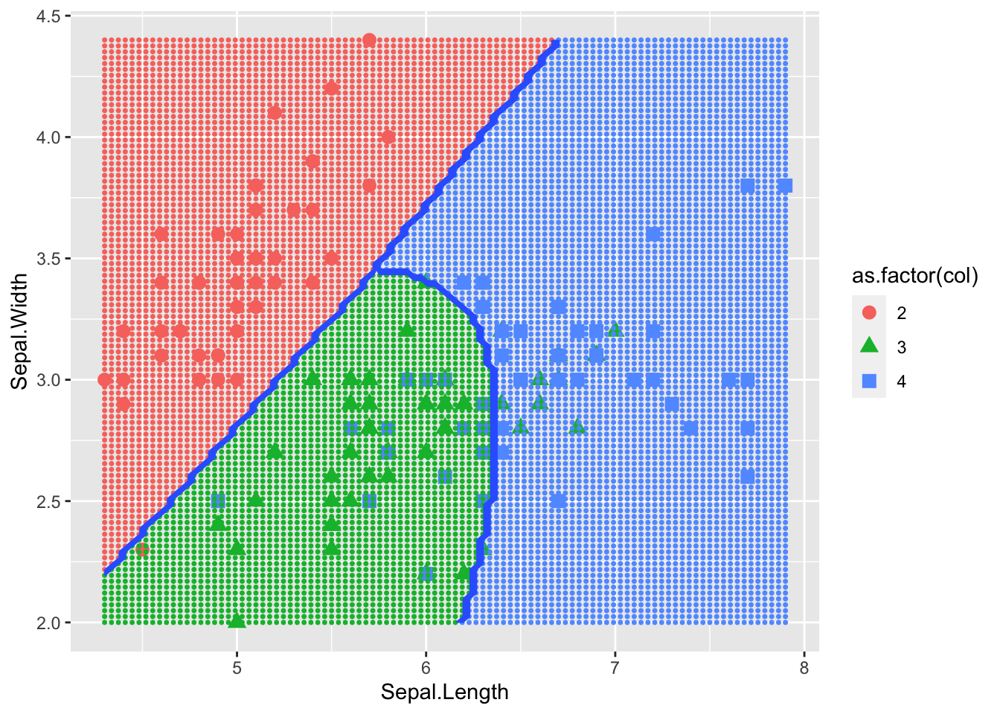
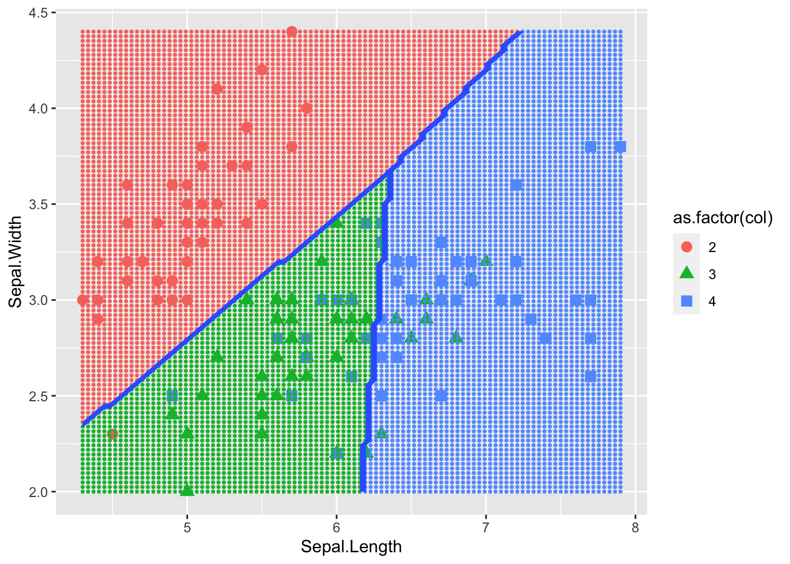

# PART 1# LDA for data reduction and classification in the 2 class case# Small LDA example (M1 course)library(MASS) # package that contains the lda and qda functions# Data x=read.table("/Users/sigurd.saue/Desktop/M2S1/Data Mining/Code/data_da-2.txt",header=TRUE)x
Obs Id Dip Test Exp Res
1 1 A 1 5 4 0
2 2 B 2 3 3 0
3 3 C 1 4 5 1
4 4 D 2 3 4 0
5 5 E 1 4 4 0
6 6 F 4 3 4 1
7 7 G 3 4 4 1
8 8 H 1 1 5 0
9 9 I 3 2 5 1
10 10 J 5 4 4 1
str(x)
'data.frame': 10 obs. of 6 variables:
$ Obs : int 1 2 3 4 5 6 7 8 9 10
$ Id : chr "A" "B" "C" "D" ...
$ Dip : int 1 2 1 2 1 4 3 1 3 5
$ Test: int 5 3 4 3 4 3 4 1 2 4
$ Exp : int 4 3 5 4 4 4 4 5 5 4
$ Res : int 0 0 1 0 0 1 1 0 1 1
# Transformation of the variable to predict in a factorx$Res=as.factor(x$Res)fit <-lda(Res ~ Dip + Test + Exp, data=x,na.action="na.omit")fit # show results
Call:
lda(Res ~ Dip + Test + Exp, data = x, na.action = "na.omit")
Prior probabilities of groups:
0 1
0.5 0.5
Group means:
Dip Test Exp
0 1.4 3.2 4.0
1 3.2 3.4 4.4
Coefficients of linear discriminants:
LD1
Dip 1.2375669
Test 0.6320478
Exp 2.1780117
plot(fit) # plot results

pred <-predict(fit,x) # predict a class# percent correct for each category of Resct <-table(x$Res, pred$class)ct
library(ggplot2)model1 <-qda(Species ~ Sepal.Length + Sepal.Width, iris)model2 <-lda(Species ~ Sepal.Length + Sepal.Width, iris)# Source the functions decisionplot and decisionplot_ggplot given below and plot the class boundariesdecisionplot(model1, iris, class ="Species") # the code is below

decisionplot(model2, iris, class ="Species")

decisionplot_ggplot(model1, iris, class ="Species") # the code is below

decisionplot_ggplot(model2, iris, class ="Species")

Part 3
library(caret)
Loading required package: lattice
library(dplyr)
Attaching package: 'dplyr'
The following object is masked from 'package:MASS':
select
The following objects are masked from 'package:stats':
filter, lag
The following objects are masked from 'package:base':
intersect, setdiff, setequal, union
# weights: 14 (13 variable)
initial value 20312.678126
iter 10 value 13743.242519
iter 20 value 12219.053017
final value 12218.977891
converged
# weights: 14 (13 variable)
initial value 20312.678126
iter 10 value 13747.766550
iter 20 value 12228.351225
final value 12228.281823
converged
# weights: 14 (13 variable)
initial value 20312.678126
iter 10 value 13743.247052
iter 20 value 12219.062396
final value 12218.987275
converged
# weights: 14 (13 variable)
initial value 20312.678126
iter 10 value 13765.680346
iter 20 value 12246.631080
final value 12246.585782
converged
# weights: 14 (13 variable)
initial value 20312.678126
iter 10 value 13771.133675
iter 20 value 12255.742335
final value 12255.701104
converged
# weights: 14 (13 variable)
initial value 20312.678126
iter 10 value 13765.684830
iter 20 value 12246.640269
final value 12246.594975
converged
# weights: 14 (13 variable)
initial value 20312.678126
iter 10 value 13793.841760
iter 20 value 12286.541954
final value 12286.488528
converged
# weights: 14 (13 variable)
initial value 20312.678126
iter 10 value 13795.333145
iter 20 value 12295.362112
final value 12295.361706
converged
# weights: 14 (13 variable)
initial value 20312.678126
iter 10 value 13793.846157
iter 20 value 12286.550894
final value 12286.497475
converged
# weights: 14 (13 variable)
initial value 20311.984979
iter 10 value 13721.635643
iter 20 value 12218.268952
final value 12218.238784
converged
# weights: 14 (13 variable)
initial value 20311.984979
iter 10 value 13728.114788
iter 20 value 12227.594200
final value 12227.562740
converged
# weights: 14 (13 variable)
initial value 20311.984979
iter 10 value 13721.640190
iter 20 value 12218.278354
final value 12218.248188
converged
# weights: 14 (13 variable)
initial value 20312.678126
iter 10 value 13765.850366
iter 20 value 12216.659774
final value 12216.654217
converged
# weights: 14 (13 variable)
initial value 20312.678126
iter 10 value 13770.349073
iter 20 value 12225.699324
final value 12225.696243
converged
# weights: 14 (13 variable)
initial value 20312.678126
iter 10 value 13765.854873
iter 20 value 12216.668891
final value 12216.663335
converged
# weights: 14 (13 variable)
initial value 20312.678126
iter 10 value 13770.324538
iter 20 value 12240.857920
final value 12240.853389
converged
# weights: 14 (13 variable)
initial value 20312.678126
iter 10 value 13774.769118
iter 20 value 12250.081867
final value 12250.077583
converged
# weights: 14 (13 variable)
initial value 20312.678126
iter 10 value 13770.328991
iter 20 value 12240.867223
final value 12240.862692
converged
# weights: 14 (13 variable)
initial value 20312.678126
iter 10 value 13757.259194
iter 20 value 12226.990213
final value 12226.984426
converged
# weights: 14 (13 variable)
initial value 20312.678126
iter 10 value 13761.771835
iter 20 value 12236.199041
final value 12236.193671
converged
# weights: 14 (13 variable)
initial value 20312.678126
iter 10 value 13757.263716
iter 20 value 12226.999500
final value 12226.993714
converged
# weights: 14 (13 variable)
initial value 20312.678126
iter 10 value 13733.937383
iter 20 value 12201.180444
final value 12201.179625
converged
# weights: 14 (13 variable)
initial value 20312.678126
iter 10 value 13741.447288
iter 20 value 12210.461137
final value 12210.459099
converged
# weights: 14 (13 variable)
initial value 20312.678126
iter 10 value 13733.941934
iter 20 value 12201.189803
final value 12201.188985
converged
# weights: 14 (13 variable)
initial value 20312.678126
iter 10 value 13793.455841
iter 20 value 12256.527179
final value 12256.483310
converged
# weights: 14 (13 variable)
initial value 20312.678126
iter 10 value 13798.869360
iter 20 value 12265.696778
final value 12265.654336
converged
# weights: 14 (13 variable)
initial value 20312.678126
iter 10 value 13793.460300
iter 20 value 12256.536427
final value 12256.492559
converged
# weights: 14 (13 variable)
initial value 20312.678126
iter 10 value 13759.171628
iter 20 value 12220.132257
final value 12220.125202
converged
# weights: 14 (13 variable)
initial value 20312.678126
iter 10 value 13763.641538
iter 20 value 12229.239487
final value 12229.233213
converged
# weights: 14 (13 variable)
initial value 20312.678126
iter 10 value 13759.176106
iter 20 value 12220.141440
final value 12220.134386
converged
# weights: 14 (13 variable)
initial value 22569.565346
iter 10 value 15360.903342
iter 20 value 13593.183764
final value 13593.180236
converged